01 / PROPORTIONAL
Fillaprint
Proportional letter widths and kerning.
Download TTF ↓FOR FDM 3D PRINTING
PERSONAL + COMMERCIAL USE / FREENominal strokes and minimum clear gaps are both two extrusion widths. This gives the letter and background materials the same design minimum for FDM printing.
w = extrusion line width. Joins may be thicker. ¹ Proportional and Tab; Mono includes 362.
Proportional letter widths and kerning.
Uniform stroke width does not control the width of gaps inside and between letters. Narrow gaps can make the background material too thin to print while the strokes are still printable.
Fillaprint uses the same design minimum for both: two extrusion widths. Joins can be thicker and some gaps are wider. Equal minimum widths do not require equal areas of ink and background.
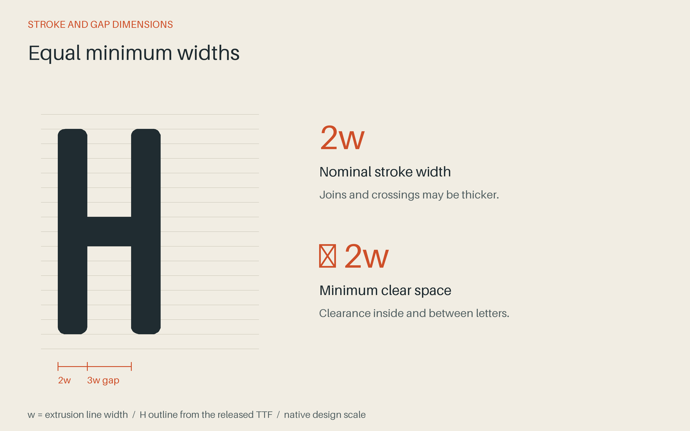
The font was first used for small, multicolour labels on masonry repointing keys. Other applications include tool labels, storage bins, and dimensions on printed parts.
The character set includes Latin letters, accents, fractions, arrows, punctuation, and measurement symbols. The old working names were Double bead and Beadjoint.
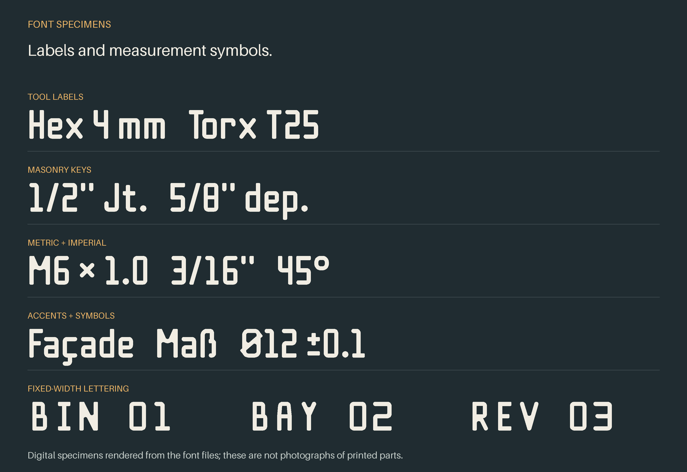
Use the extrusion line width for the text, which may differ from the nozzle diameter. The calculator gives the font’s reference size.
At 0.42 mm line width, start with a 5.88 mm capital height.
The demo coupon was sliced at a 0.32 mm extrusion width. Yellow is the lettering, grey is the body, blue is the design outline, and white marks areas without a bead on that layer. This is a toolpath render. Check the preview for your own printer and settings.
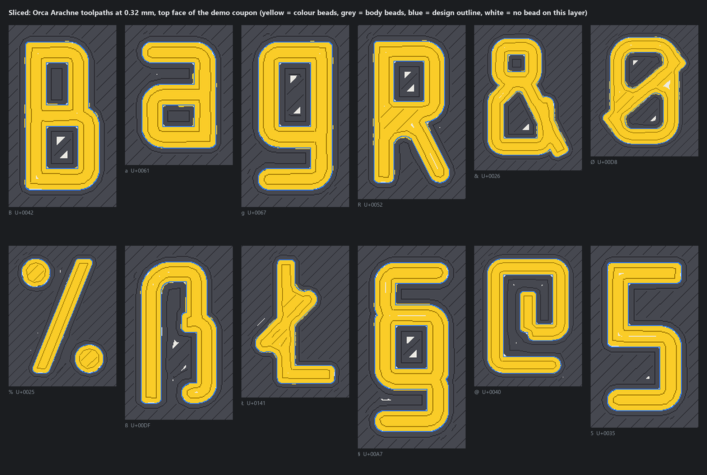
01 / PROPORTIONAL
Proportional letter widths and kerning.
Download TTF ↓02 / TABULAR FIGURES
Proportional letters, equal-width digits. For measurements in columns.
Download TTF ↓03 / MONOSPACE
A fixed 12w cell. Narrow forms and 362 drawn characters.
Download TTF ↓Open a downloaded TTF in your system’s font installer, install it, and restart your CAD or design app if needed. Download all three with the license ↓
ASCII, Latin-1, Latin Extended-A, Romanian comma-below letters, additional Welsh accents, capital ẞ, fractions, currency signs, arrows, and selected mathematical symbols. This is a Latin-focused family, without complete Greek or Cyrillic alphabets.
Beta updates: Keep the release ZIP with projects that need exact lettering. Future revisions may change spacing or outlines. Replace installed fonts and restart your design app when updating. Release notes →
Free for personal and commercial work. The SIL Open Font License permits modifications and embedding. Distributed fonts must retain the copyright notice and OFL; modified versions must use different names unless permission is granted. The font cannot be sold by itself.
Your documents, artwork, and printed products do not have to use the OFL or display a credit. If you build on the font, please acknowledge its origins and describe your changes.
Full license and Reserved Font Names · License explained · Source on GitHub ↗ · Asset record
Every mapped character in each released font, set at 11 pt. Spaces occupy blank cells. Point to a cell for its Unicode value and name.
389 mapped characters. Fillaprint Tab and Fillaprint Mono use these shapes except where noted below.
Tab uses the same shapes as Fillaprint for all 389 characters; only spacing differs: every digit sits on the same 9w cell, so numbers line up in columns.
Fillaprint above left, Tab above right.
375 mapped characters on a fixed 12w cell. These 128 are redrawn for the cell: counters widened, and narrow letters such as i, l and r given bars.
Mono leaves out 14 characters too wide for its cell: © ® ¼ ½ ¾ ʼn ‰ ™ ⅓ ⅔ ⅛ ⅜ ⅝ ⅞
Capital F with lowercase letters. The p extends below the baseline.
Download SVG ↓Paired l characters and two dotted i characters, set with the font’s default spacing.
Download SVG ↓A level capital height for horizontal labels, packaging, and file covers.
Download SVG ↓Two unmodified capitals for a compact badge. Shown at four sizes.
Download SVG ↓THREE FONT FAMILIES
Install Fillaprint, Fillaprint Tab, and Fillaprint Mono from the downloads above.
These are screen specimens, not photographs of printed parts. Actual print size depends on extrusion width and sliced geometry.
The SVGs contain actual glyph outlines from Fillaprint, with the font’s kerning. They open without installing the font. All four SVGs use blue lettering on a transparent background.
The glyph tuner is a local tool in the font repository. It edits the numeric coordinates and radii of the existing glyph definitions, redraws the glyph with the same code that builds the fonts, and exports the change as an ordinary Git patch. It runs on your computer and uploads nothing.
You need Git and Python 3.12 or newer. The tuner uses the font’s pinned requirements; it adds no accounts, services, or JavaScript packages.
git clone https://github.com/thereprocase/double-bead.git
cd double-bead
python -m venv .venv
. .venv/bin/activate
python -m pip install --only-binary=:all: -r requirements.txt
python -m tuner.serveOn Windows PowerShell, activate the environment with .venv\Scripts\Activate.ps1. The browser opens http://127.0.0.1:8766. The server accepts connections from this computer only.
The left rail lists 193 constructions: base letters, capitals, symbols, Mono variants, accent marks, and the shared dot radius. The right rail lists the selected construction’s numbers with its source file and line.
Search by character or group name. The preview glyph and family can differ from the construction, so you can edit the base n and inspect ñ in Mono.
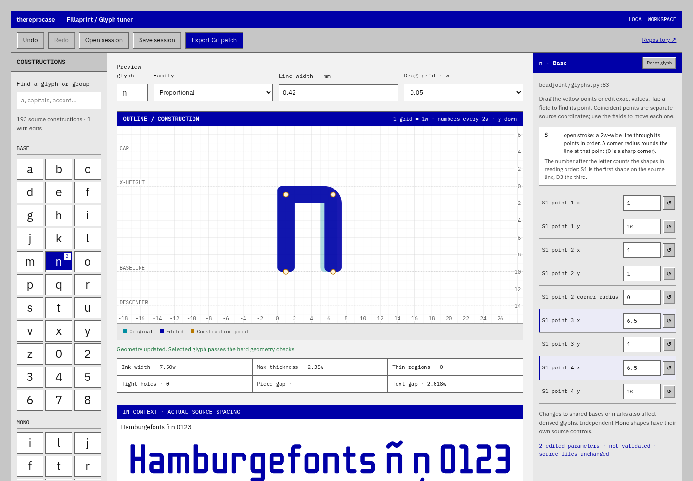
n moved from 6w to 6.5w. Changed values are highlighted.Drag the yellow construction points, or type exact values in the right rail. Coordinates are in extrusion widths (w), with Y pointing down; a normal stroke stays 2w wide. The edited outline is drawn in blue over the original in cyan.
Readouts show ink width, maximum thickness, thin regions, tight holes, and gaps. The sample line uses the font’s actual spacing. If strokes come closer than 2w, finishing fills the gap with ink and the tuner shows an amber warning, because those strokes would print as one solid block. The first preview after starting the tuner takes about 7 seconds; later previews take about 1–2 seconds. Undo, redo, and reset are available, and the browser keeps your edits between visits.
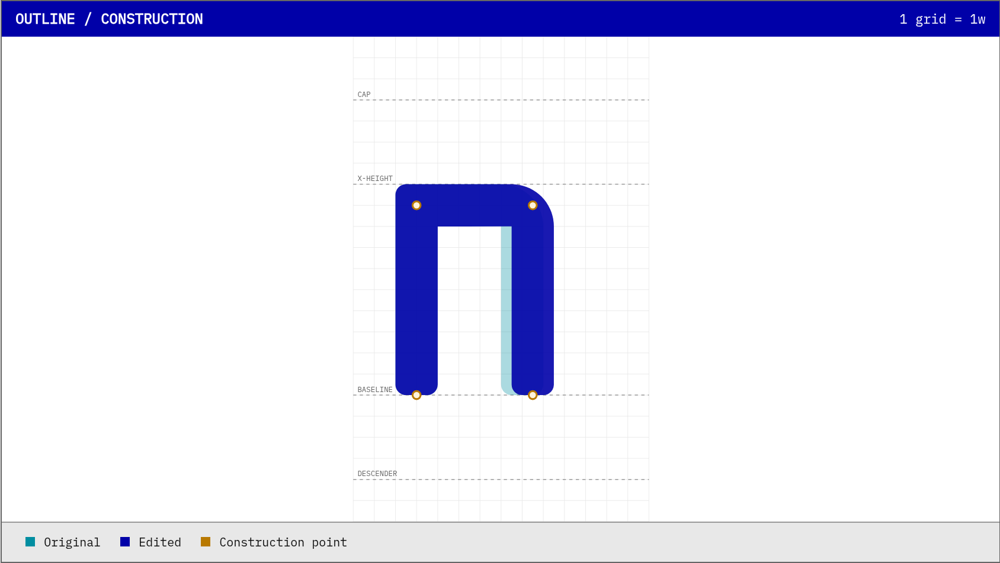
Validate changed glyphs rebuilds Proportional, Tab, and Mono and checks every outline that changed, including accented letters built from the edited base. In testing, validation took about 5–10 seconds. Failing glyphs are listed in red.
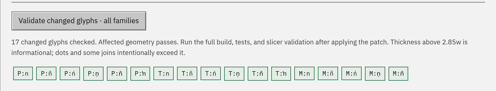
Export Git patch downloads fillaprint-glyphs.patch — most browsers save it to a Downloads folder. It asks you to confirm first if validation failed or hasn’t run yet. Save session stores your values to resume later; a session contains parameter identifiers, source-file hashes, and numbers only. Stop the tuner, then apply the patch in your clone and rebuild and test:
git switch -c glyph/my-adjustment
git apply --check ~/Downloads/fillaprint-glyphs.patch
git apply ~/Downloads/fillaprint-glyphs.patch
python build.py
python -m unittest discover -s tests
git restore fonts specimen report.jsonAdjust the patch path if your browser saved it somewhere else. Restart the tuner if you want to keep iterating. The last line undoes the binaries build.py just rebuilt: maintainers rebuild fonts, specimens and the report once per release, so a source-only pull request shouldn’t include them.
Open a pull request with the source diff, why the glyph is better, the affected families, and before-and-after images. Slicer evidence helps: record your line width, slicer version, and profile.
Back to top ↑ Tuner documentation → Screenshot source record →
Five candidates for each letter, with the current v0.1.1 shapes (V0, Z0) for comparison. The finishing step that fills the joints is unchanged; the candidates change the joint geometry, which decides how much fill it adds.
Three limits set how sharp a joint can be. Inside the joint, finishing fills any negative space narrower than 1.96w, so the notch always ends in a round about 2w across; a wider angle makes that fill shallower. At the point, ink narrower than 2w may cover at most 0.5 w²: fully mitred corners on today’s 55° z fail that check. And before any filling, where two arms meet the stroke may be at most 2.85w across (two beads): at today’s v angle, any point tighter than a 0.7w fillet breaks that rule, so a sharper v needs a wider angle. The outside rounding (R0.5w) is left as it is: it is about the radius a bead draws at a corner, and halving it would move these outlines by 0.1w at most.
Every candidate below is finished and checked by the font’s own code: thin ink, enclosed holes, fused pieces, the 4.85w thickness limit, the accented letters built from it (ź ż ž), the two-bead stroke rule, and the spacing of the sample words, computed for the new shape. V2, V5 and all five z candidates were also built into complete fonts with build.py and passed its checks. These are geometry checks, not print tests.
Capitals follow whichever direction is chosen. For reference, the capital Z already gets no fill, because its diagonal is steep (65°); the capital V gets 3.98 w², the most of these four letters. Measurements and sources: candidates.json.
Arms meet in a 1w centreline fillet, so the point is a 2w-radius curve.
Passes the build's glyph checks (v)
g["v"] = solve(lambda vy: S((1, 1, B), (4, vy), (7, 1, B)))Fillet 0.7w: the tightest that keeps the unfilled stroke within two beads (2.85w) at today's angle.
Passes the build's glyph checks (v)
g["v"] = solve(lambda vy: S((1, 1, B), (4, vy, 0.7), (7, 1, B)), lo=5.0)A mitred point cut flat on the baseline, 1.0w wide. 8w between arm centres is the narrowest spread where a cut point stays within two beads.
Passes the build's glyph checks (v)
g["v"] = S((1, 1, B), (4.5, 8.685, 0), (8, 1, B)).intersection(Rect(-5, -5, 20, 10))Cut 1.0w point at an 8.5w spread, with the arm ends cut flat on the x-height like the capitals' diagonals.
Passes the build's glyph checks (v)
g["v"] = S((1 - 0.4846 * 3, -2), (4.75, 8.739, 0), (8.5 + 0.4846 * 3, -2)).intersection(Rect(-5, 0, 20, 10))Arms meet in a plain round join (the stroke's own 1w radius). At a narrower spread this join is thicker than two beads.
Passes the build's glyph checks (v)
g["v"] = solve(lambda vy: S((1, 1, B), (4.75, vy)) | S((4.75, vy), (8.5, 1, B)) | D((4.75, vy)), lo=5.0)A true mitred point. It passes only at this width (10w ink, as wide as m); narrower, the tip is thin ink.
Passes the build's glyph checks (v)
g["v"] = S((1, 1, B), (5, 8.444, 0), (9, 1, B))Diagonal at 55°. Corners filleted 0.8w on the centreline (1.8w outside radius).
Passes the build's glyph checks (zźżž)
g["z"] = S((0, 1), (6.3, 1, 0.8), (0.7, 9, 0.8), (7, 9))Same 55° diagonal. Corners are the stroke's own 1w radius. Sharper corners, but slightly more fill in the notches.
Passes the build's glyph checks (zźżž)
g["z"] = S((0, 1), (6.3, 1)) | S((6.3, 1), (0.7, 9)) | S((0.7, 9), (7, 9)) | D((6.3, 1)) | D((0.7, 9))Sharp mitred corners. At 55° they fail the thin-ink check; 58° is the first lean that passes.
Passes the build's glyph checks (zźżž)
g["z"] = S((0, 1), (6.0, 1, 0), (1.0, 9, 0), (7, 9))Steeper diagonal. The notch under each bar falls below the 0.5 w² fill tolerance, so finishing leaves it open.
Passes the build's glyph checks (zźżž)
g["z"] = S((0, 1), (5.7, 1, 0), (1.3, 9, 0), (7, 9))The capital Z's lean. Corners land inside the bar ends.
Passes the build's glyph checks (zźżž)
g["z"] = S((0, 1), (5.4, 1, 0), (1.6, 9, 0), (7, 9))Full-width bars with square ends; the diagonal is cut flat on the bars' outer edges, like N.
Passes the build's glyph checks (zźżž)
g["z"] = S((0, 1), (7, 1)) | S((0, 9), (7, 9)) | diagonal(5.2, 1, 1.8, 9, clip=(0, 10))Four widths for the capital V and four ways to lengthen the capital Z’s bars, with the v0.1.2 shapes (CV0, CZ0) for comparison. Nothing here is in the installable fonts yet; the chosen pair goes into the next release.
V. The round point stays; only the spread of the arms changes, in half-bead steps from 9w to 11w of ink. A wider V also gets less joint fill, because the angle opens. At 10w (CV2) the V is as wide as M and W, and that is the widest capital the Mono cell holds: with CV3 or CV4, Fillaprint Mono would get its own 10w V (CV2).
Z. Today’s mitred corners stick out 0.6w past the ends of the bars, so the bars stop short of the corner above or below them. CZ1 runs each bar out level with the opposite corner without making the Z any wider. CZ2 runs them 0.5w further. CZ3 and CZ4 also move the corners outwards, which flattens the diagonal (61° and 63°, from 65°). The notch under each bar stays below the fill tolerance, so the corners stay sharp.
Every candidate is finished and checked by the font’s own code (thin ink, holes, fused pieces, the 4.85w thickness limit, Ź Ż Ž built from the new Z, and the spacing of the sample words) and was built into complete fonts with build.py. These are geometry checks, not print tests.
Measurements and sources: candidates.json.
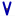
Round point, arm centres 1 to 8: 9w of ink, as wide as N and O.
Passes the build's glyph checks (V)
g["V"] = solve(lambda vy: S((1, -3, B), (4.5, vy)) | S((4.5, vy), (8, -3, B)) | D((4.5, vy)), lo=5.0, hi=20)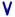
Arm centres 1 to 8.5: 9.5w of ink. The same spread as the lowercase v.
Passes the build's glyph checks (V)
g["V"] = solve(lambda vy: S((1, -3, B), (4.75, vy)) | S((4.75, vy), (8.5, -3, B)) | D((4.75, vy)), lo=5.0, hi=20)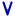
Arm centres 1 to 9: 10w of ink, as wide as M and W, and the widest V the Mono cell holds.
Passes the build's glyph checks (V)
g["V"] = solve(lambda vy: S((1, -3, B), (5.0, vy)) | S((5.0, vy), (9, -3, B)) | D((5.0, vy)), lo=5.0, hi=20)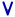
Arm centres 1 to 9.5: 10.5w of ink. Wider than the Mono cell allows, so Mono would use CV2.
Passes the build's glyph checks (V)
g["V"] = solve(lambda vy: S((1, -3, B), (5.25, vy)) | S((5.25, vy), (9.5, -3, B)) | D((5.25, vy)), lo=5.0, hi=20)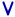
Arm centres 1 to 10: 11w of ink. Mono would use CV2.
Passes the build's glyph checks (V)
g["V"] = solve(lambda vy: S((1, -3, B), (5.5, vy)) | S((5.5, vy), (10, -3, B)) | D((5.5, vy)), lo=5.0, hi=20)Mitred corners, 65° diagonal. The corner tips stick out 0.6w past the bar ends.
Passes the build's glyph checks (ZŹŻŽ)
g["Z"] = S((0, -3), (6.3, -3, 0), (0.7, 9, 0), (7, 9))Same diagonal and corners; each bar runs 0.6w further, level with the opposite corner tip. The Z is no wider.
Passes the build's glyph checks (ZŹŻŽ)
g["Z"] = S((-0.585, -3), (6.3, -3, 0), (0.7, 9, 0), (7.585, 9))Same diagonal; each bar runs 1.1w further, 0.5w past the opposite corner. 1w wider.
Passes the build's glyph checks (ZŹŻŽ)
g["Z"] = S((-1.085, -3), (6.3, -3, 0), (0.7, 9, 0), (8.085, 9))Corners move out 0.5w each, to the lowercase z's lean; bars level with the corner tips. 1.1w wider.
Passes the build's glyph checks (ZŹŻŽ)
g["Z"] = S((-1.146, -3), (6.8, -3, 0), (0.2, 9, 0), (8.146, 9))Corners move out 0.25w each (63°); bars run 0.5w past the corner tips. 1.6w wider.
Passes the build's glyph checks (ZŹŻŽ)
g["Z"] = S((-1.365, -3), (6.55, -3, 0), (0.45, 9, 0), (8.365, 9))